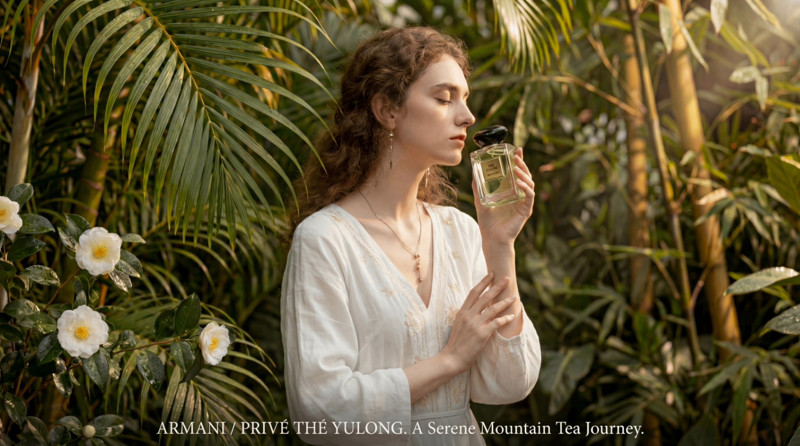
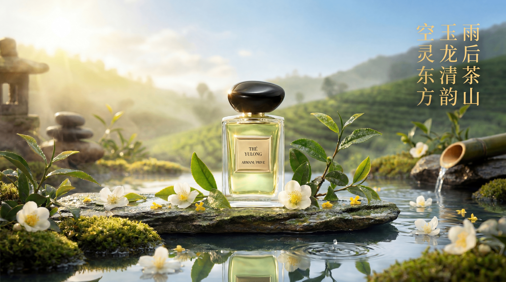
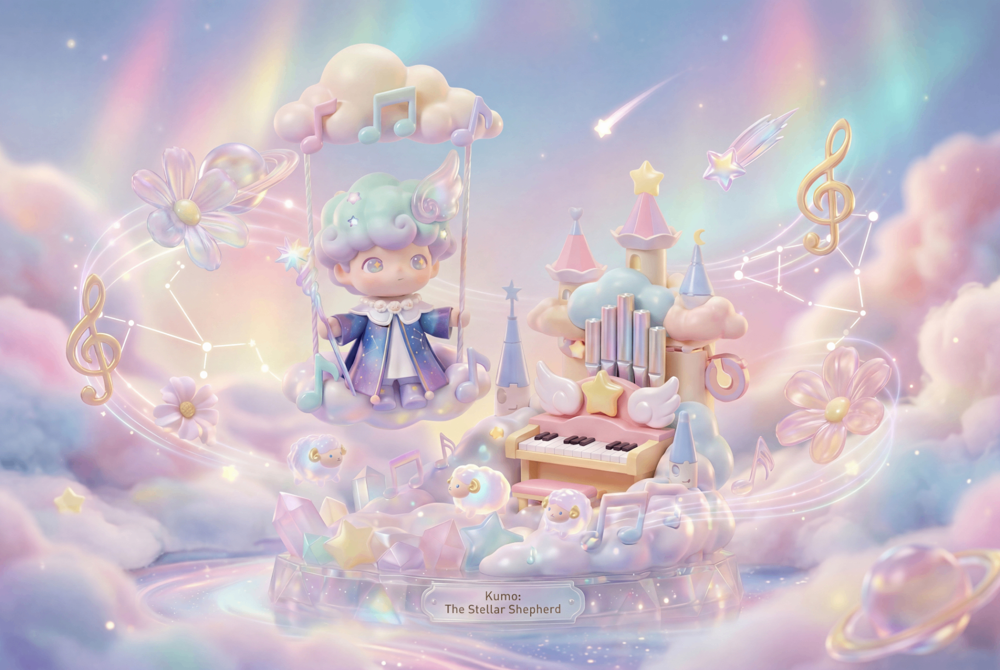
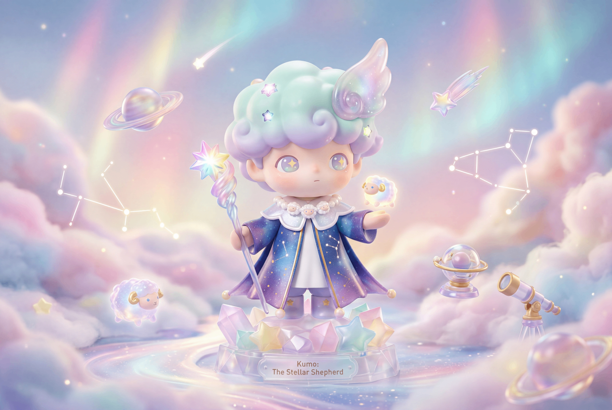
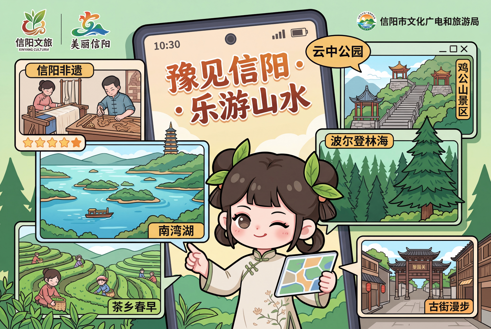

奇思妙想的具象化
不再局限于文字的讲述，我使用 Seedance2.0 与 NanoBanana 等生成式 AI 工具，将脑海中天马行空的灵感转化为触手可及的视觉艺术。


空灵东方：
阿玛尼玉龙茶香
💡 灵感来源：
以“雨后茶山，玉龙清韵”为核心意象，打破传统商业棚拍的物理边界。将阿玛尼高定私藏香水置身于云雾缭绕的东方茶园与禅意水景中，传递出空灵、清新的东方木质香调故事。
🎨 AI创作过程：
运用 NanoBanana 调控丁达尔光效与微距水波，强化玻璃瓶身的物理折射感。后期利用局部重绘精准还原黑石瓶盖质感与烫金铭牌，实现自然诗意与高定奢华的完美融合。
动态演绎：
光影流转间的茶香诗意
💡 镜头语言：
将静态的视觉重构升级为动态的感官体验。视频通过模拟微距镜头下的水波流转与晨曦光影，赋予了香水瓶生动的生命力，让观者仿佛能真切嗅到山泉与清茶交织的香气。
🎬 AI动态控制：
利用前沿的 AI 视频生成大模型，将静态概念图延展为真实的自然影像。核心操作在于精确控制泉水流动的物理动态规律，以及树影斑驳的自然闪烁节奏，最终打造出极具沉浸感的商业级动态大片。


梦境守望者：
潮玩 IP Kumo 诞生记
💡 灵感来源：
“Kumo”在日语中意为“云”，被设定为一位漫游在极光与星海之间的星际牧羊人。结合当下年轻人喜爱的盲盒潮玩美学，将治愈系的马卡龙色彩与宇宙星象元素相融合，打造一个能给快节奏现代生活带来慰藉的温暖 IP 形象。
🎨 AI创作过程：
使用 AI 深度探索 3D 渲染与材质表现。通过 Prompt 精确控制“盲盒质感”与“搪胶玩具”属性，完美呈现角色的微透肤感、头发的珠光渐变以及底座剔透的水晶质感。辅以柔和光照，构建出极致细腻的商业级视觉。
盛夏狂欢：
方特夏日乐园 KV 海报
💡 灵感来源：
围绕“夏日清凉”与“全家狂欢”的核心诉求，将方特东方神话的标志性古建与惊险的现代过山车巧妙同框。画面融入了锦鲤浮排、水上嬉戏以及国民级 IP《熊出没》元素，打造色彩明快、充满童趣的夏日游乐乌托邦。
🎨 AI创作过程：
挑战高难度的商业级大场景与多元素融合。通过底层空间控制网络确保古建与水景的透视比例精准。运用精细的 Prompt 调控全局光照，输出具有统一 3D 皮克斯级质感的高精度主视觉海报。

豫见信阳：
数字文旅插画
💡 灵感来源：
采用二次元萌系插画风格，结合“云旅游”手机数字视窗概念。将信阳毛尖茶乡、南湾湖、鸡公山等核心地标与非遗文化，通过悬浮视窗的形式展现，打造亲切可爱的虚拟文旅导游。
🎨 AI创作过程：
探索矢量插画与 UI 视觉融合。通过 Prompt 设定统一的粗线勾勒与明快调色板，确保多个景区元素能在同框时保持强烈的视觉统一性，巧妙植入 UI 控件与信息气泡，完成兼具趣味与信息传达的商业插画。
思考与沉淀
破解 Claude Code 的“记忆宫殿”
从 Anthropic 泄露的源码中，深度解析 Claude 独特的“三层记忆” system，探讨它如何像人类一样高效管理对话上下文，并总结出提升 AI 协作的实用技巧。深入反思大模型在长文本处理中的 logic 黑盒与状态控制，探讨模型如何在高频交互中维持逻辑的连续性。
AI 时代的审美革命：从文生图到创意涌现
随着文生图技术的快速更迭，设计行业的边界正在重构。本文深度探讨当 AI 能够瞬间输出视觉方案时，人类创作者的核心价值将如何从“执行者”转向“策划者”，以及审美思维如何成为 AI 时代设计师的最强护城河。
AI 能写诗，但写不出安慰？
通过一次“失去宠物”的情感陪伴测试，剖析 AI 在情感计算中的边界。探讨人类在共情、分寸感上的不可替代性。通过多次对话实验，反思 AI 真正的陪伴意义与情感交互中的不可计算性，以及算法如何模拟却无法真正抵达人类感性的最底层触点。
多模态 Agent：让产品交互从“指令”走向“直觉”
探讨 Agent 进化下的交互新范式。当多模态感知赋予 AI “看见”与“听见”的能力，产品经理该如何设计出更符合用户直觉、无需复杂 prompt 也能完成复杂任务的智能应用？本文分析 Agent 在交互设计上的破局之道。
为 Agent 训练出靠谱的 Skills
告别纸上谈兵，教你通过制定严格的《说明书》、构建正反例训练集以及 A.S.S. 评估标准，为 AI Agent 打造稳定、安全、可落地的专业技能。实战分享如何将模糊的 Prompt 转化为精准的执行能力，并实现闭环迭代与质量监控，确保 Skill 的长效执行。
周术琼
AI 训练师 / 模型评测
个人优势
文章多次登「人人都是产品经理」首页、公众号推文点击量3w+。
主导多模态视觉评测与多轮对话Agent训练，管理标注质检全流程。
从一线标注成长为项目组长，保持高质量数据交付。
熟练使用LoRA微调大模型视觉、利用自动化工具流与Vibe-Coding实现标注提效。
技能与成就
恭喜你，触发隐藏彩蛋！
谢谢你愿意看到最后，我的荣幸。
"不管未来的我们是否会产生交集，
都祝你今天的心情，明媚、轻松、且自由！"